Магія ткацтва — у браслаўскім музеі адкрылася новая выстава. Подробнее ТУТ
Мастацкія выхадныя ў Браславе: друйская выстава жывапісу адкрылася ў музеі. Подробнее ТУТ
Календарь памятных дат Браславщины на 2017 год. Подробнее ТУТ
По следам войны: браславчане осмотрели ДОТы Первой мировой. Подробнее ТУТ
Зарніцы і Меч Брачыслава - 2016. Подробнее ТУТ
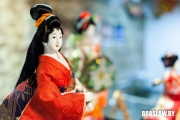Ночь музеев в Браславе: как всегда аншлаг! Подробнее ТУТ
Музеі Браслава арганізавалі выставу Веры Шыкалавай - майстра па саломцы, шыцці, ткацтве. Подробнее ТУТ
Что нас ждет на "Мячы Брачыслава -2016?": уличный театр, средневековые танцы, шоу огня и "Navi". Подробнее ТУТ
Музеи Браслава организовали мастер-класс по скрапбукингу. Подробнее ТУТ
У Браславе паказалі карціны вядомага мастака Фёдара Ястраба. Подробнее ТУТ
В музее традиционной культуры открылась выставка вязания «Майстэрства цеплыні». Подробнее ТУТ
В календарь туристических событий Беларуси попали "Viva Braslav", "Зарницы", "Меч Брачыслава" и регата. Подробнее ТУТ
Ларыса Дарафейчык - таленавіты ганчар з Браслава. Подробнее ТУТ
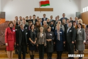"Браслаўскія чытанні 2015" - міжнародная канферэнцыя з багатай гісторыяй. Подробнее ТУТ
Яшчэ не позна наведаць выставу, прысвечаную 10 стагоддзям Браслава! Подробнее ТУТ
У музеі традыцыйнай культуры адкрылася выстава мастакоў Браслаўшчыны.Подробнее ТУТ
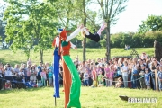Меч Брачыслава і Зарніцы 2015 (фота, відэа). Подробнее ТУТ
Краязнаўца з Браслава Ілля Вашкель. Подробнее ТУТ
Дзень і Ноч музеяў - 2015 у Браславе (відэа). Подробнее ТУТ
Фэст экскурсаводаў-2015 у Браславе сабраў амаль 60 чалавек. Подробнее ТУТ
Выстава фларыстыкі і вышыўкі адкрылася ў браслаўскім музеі. Подробнее ТУТ
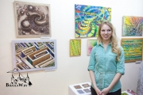У браслаўскім музеі традыцыйнай культуры адкрылася выстава дызайна. Подробнее ТУТ
У музеі традыцыйнай культуры Браслава ладзяць майстар-класы па рамёствах. Подробнее ТУТ
У краязнаўчым музеі Браслава працуе выстава, прысвечаная I сусветнай вайне. Подробнее ТУТ
Работу браславского мастера Алины Выжиковской могут показать на выставке в Милане. Подробнее ТУТ
В музее посетителей познакомили со свадебной индустрией Браслава и открыли фотовыставку. Подробнее ТУТ
Кіраўніка клуба народных майстроў "Ля возера" Наталлю Парахневіч прызналі лепшым супрацоўнікам культуры за мінулы год. Подробнее ТУТ
В браславском музее традиционной культуры провели мастер-класс по геральдике. Подробнее ТУТ
У браслаўскім музеі адкрылася выстава разьбяра па дрэве, мастака Віктара Дудкевіча.Подробнее ТУТ
У браслаўскім музеі адкрылася выстава жывапісу краслаўскіх мастакоў. Подробнее ТУТ
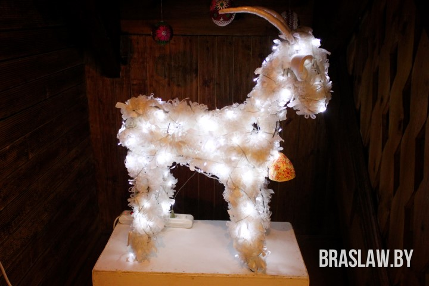У браслаўскім музеі традыцыйнай культуры заззялі калядныя ўзоры! Подробнее ТУТ
100 гадоў таму на Браслаўшчыне пачалася Першая сусветная вайна (факты). Подробнее ТУТ
«Здабытки дзесяцігоддзя» прэзентавалі ў браслаўскім
гісторыка-краязнаўчым музеі. Подробнее ТУТ
У браслаўскім музеі традыцыйнай культуры адкрылася выстава графікі Ванды Лагун. Подробнее ТУТ
У музеі традыцыйнай культуры адкрылася выстава жывапісу, прысвечаная Язэпу Драздовічу. Подробнее ТУТ
У браслаўскім музеі правялі навукова-практычную канферэнцыю. Подробнее ТУТ
Браславчане одержали двойную победу на фестивале «Лялечны свет» в Сенно. Подробнее ТУТ
У музеі традыцыйнай культуры абмеркавалі культурныя праблемы Браслава. Подробнее ТУТ
Браславчане поучаствовали в международном фестивале в Даугавпилсе. Подробнее ТУТ
У браслаўскім музеі адкрылася выстава грошаў (фота). Подробнее ТУТ
Браславский музей показал свои наработки на форуме в Гомеле. Подробнее ТУТ
В браславском музее традиционной культуры открылась выставка соломенных изделий. Подробнее ТУТ
Браславский музей начал сотрудничать с коллегами из Краславы. Подробнее ТУТ
Как «сушили» фотографии возле браславского музея традиционной культуры (фото). Подробнее ТУТ
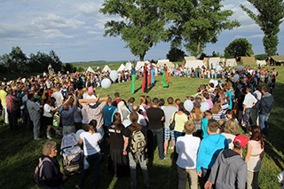ФЕСТИВАЛЬ МЕЧ БРАЧЫСЛАВА - 2014 (ФОТО, ВИДЕО). Подробнее ТУТ
НОЧЬ МУЗЕЕВ - 2014 В БРАСЛАВЕ (ФОТОРЕПОРТАЖ). Подробнее ТУТ
БРАСЛАВСКИЙ МУЗЕЙ ВЫРАБОТАЕТ НОВУЮ СТРАТЕГИЮ РАЗВИТИЯ (ФОТО). Подробнее ТУТ
Загадкавая “авіякатастрофа” ля Замкавай гары (фота, відэа). Подробнее ТУТ
В Браславе до 1983 года функционировал аэропорт (фото). Подробнее ТУТ
В браславском музее традиционной культуры открылась пасхальная выставка (фото). Подробнее ТУТ
Ці ведаеце вы гісторыю Замкавай гары ў Браславе? (фота). Подробнее ТУТ
В браславском музее традиционной культуры можно увидеть птиц нашего края (фото). Подробнее ТУТ
В краеведческом музее открылась выставка «История католического костела на Браславщине» (фото). Подробнее ТУТ
Вялейскія краязнаўцы абмяняліся досведам з браслаўскімі (фота). Подробнее ТУТ
Браславское музейное объединение провело встречу с хозяевами агроусадеб района (фото). Подробнее ТУТ
У браслаўскім музеі традыцыйнай культуры адкрылася выстава строяў, даспехаў, зброі (фота, відэа). Подробнее ТУТ
На Замковой горе в Браславе в 60-х были карусель, качели, статуя (архивное фото). Подробнее ТУТ
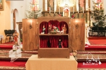У браслаўскім музеі традыцыйнай культуры адкрылася
выстава жывапісу Т. Баркоўскага (фота). Подробнее ТУТ
Батлейка ў Кансталіне! (фотарэпартаж). Подробнее ТУТ
У браслаўскім краязнаўчым музеі адкрылася выстава знаходак Пятра Агейчыка (фота). Подробнее ТУТ
У браслаўскім музеі традыцыйнай культуры адкрылася выстава выцінанкі (фота). Подробнее ТУТ
На Браслаўшчыну вярнулася батлейка! (фота, відэа). Подробнее ТУТ
У браслаўским краязнаўчым музеі прыгадалі, як святкаваўся Новы год у СССР (фота). Подробнее ТУТ
Выстава «Калядныя ўзоры» адкрылася ў браслаўскім музеі традыцыйнай культуры (фота, відэа). Подробнее ТУТ
В браславском музее традиционной культуры открылась выставка «Мир в моих ладонях» (фото). Подробнее ТУТ
Пётр Касцюкевіч - партызанскі паэт і мастак з Браслаўшчыны. Подробнее ТУТ
У Полацку адкрылася выстава мастака з Браслаўшчыны Яна Рыдзікі (фота). Подробнее ТУТ
В браславском музее традиционной культуры открылась фотовыставка «Black and White» (фото). Подробнее ТУТ
Фотофакт: в Браславе возле музея установили «солнечные фонари». Подробнее ТУТ
Браславский краеведческий музей торжественно отпраздновал свое 25-летие (фото, видео). Подробнее ТУТ
Будынку браслаўскага краязнаўчага музея ўжо 80 гадоў! (архіўнае фота). Подробнее ТУТ
В браславском музее традиционной культуры поздравили многодетных матерей (фото). Подробнее ТУТ
У браслаўскім музеі традыцыйнай культуры функцыянуе выстава ручнікоў (фотарэпартаж). Подробнее ТУТ
У браслаўскім музеі традыцыйнай культуры адкрылася выстава твораў мастака Чэслава Жуселя (фота). Подробнее ТУТ
Браславский музей организует свадьбы в традиционном стиле (фото). Подробнее ТУТ
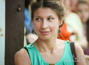Ганна Базарэвіч - таленавітая краязнаўца з Браслава. Подробнее ТУТ
Браславский музей традиционной культуры организовал ярмарку ремесел (фото). Подробнее ТУТ
Без участия браславчан в последние годы «Славянский базар в Витебске» не обходится (фото). Подробнее ТУТ
Браславский музей традиционной культуры организовал ярмарку ремесел (фото). Подробнее ТУТ
В музее традиционной культуры открыли выставку, посвященную Слободке. Подробнее ТУТ
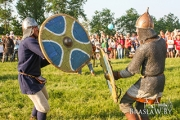Фестиваль средневековой культуры «Меч Брачыслава - 2013» (фоторепортаж). Подробнее ТУТ
Ночь музеев - 2013 в Браславе (фото). Подробнее ТУТ
Фэст экскурсаводаў - 2013 у Браславе (фота, відэа). Подробнее ТУТ
Ночь музеев в Браславе 2012. Подробнее ТУТ
В Браславе прошла ярмарка народных ремесел. Подробнее ТУТ
В браславском музее традиционной культуры открылась выставка кукол (фото, видео). Подробнее ТУТ
Браславские ткачихи поучаствовали в областной выставке в Докшицах. Подробнее ТУТ
У браслаўскім музеі традыцыйнай культуры прэзентавалі новы нумар часопіса «Павет» (фота, відэа). Подробнее ТУТ
В браславском музее традиционной культуры открылась выставка соломенных панно. Подробнее ТУТ
Браславчане побывали на Славянском базаре. Подробнее ТУТ
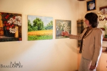Знаменитые люди Браславщины - Элла Зинкевич. Подробнее ТУТ
В браславском музее традиционной культуры открылась армянская выставка (фото). Подробнее ТУТ
В историко-краеведческом музее в Браславе начала работать выставка, посвященная театральной культуре Браславщины. Подробнее ТУТ
В браславском доме ремесел действует выставка любительской вышивки (фото). Подробнее ТУТ
В браславском музее традиционной культуры действует выставка полоцких мастеров лоскутного шитья (фото). Подробнее ТУТ
Браславчане покалядовали на православное рождество (фото). Подробнее ТУТ
В браславском музее традиционной культуры открылась выставка Калядныя ўзоры (фото). Подробнее ТУТ
Знаменитые люди Браславщины - Людмила Рулевич. Подробнее ТУТ
Лучший музейный работник живет в Браславе! Подробнее ТУТ
В браславском музее открылась экспозиция, посвященная Друе. Подробнее ТУТ
В Браславе прошла ярмарка ремесел. Подробнее ТУТ
Браславчане приняли участие в Славянском базаре. Подробнее ТУТ
Браславщина на снимках 30-60-х годов (фото). Подробнее ТУТ
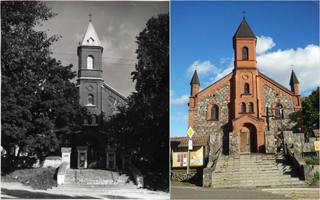Эллу Зинкевич признали лучшим мастером традиционных ремесел. Подробнее ТУТ
В Браславском Музее традиционной культуры открылась выставка самоделок. Подробнее ТУТ
Браслав - старый и новый (фото). Подробнее ТУТ
В Браславском краеведческом музее открылась выставка, посвященная еврейской общине. Подробнее ТУТ
В Браславском музее традиционной культуры открылась выставка живописи Яна Ридика. Подробнее ТУТ